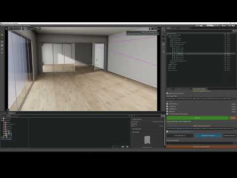
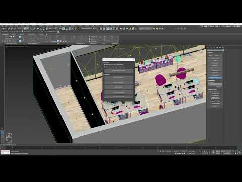

<title>Physicl Isaac Bridge</title>
<link rel="preconnect" href="https://fonts.googleapis.com">
<link rel="preconnect" href="https://fonts.gstatic.com" crossorigin>
<link rel="stylesheet" href="https://fonts.googleapis.com/css2?family=Space+Grotesk:wght@600;700&family=IBM+Plex+Sans:wght@400;500;600&family=IBM+Plex+Mono:wght@400;500&display=swap">
<style>
  :root {
    --bg: #eef2f0;
    --surface: #e2e9e6;
    --border: #c5d0cc;
    --border-soft: #d3dcd8;
    --text: #121a17;
    --text-muted: #5a6864;
    --accent: #1f8f73;
    --accent-2: #2c6fa0;
    --accent-3: #a8631a;
    --accent-soft: rgba(31,143,115,0.10);
    --accent-2-soft: rgba(44,111,160,0.10);
    --accent-3-soft: rgba(168,99,26,0.12);
    --mono-bg: #dde4e1;
    --sem-done: #2f6b46;
    --sem-pending: #6d6a4d;
    --sem-limit: #9c5a17;
  }
  @media (prefers-color-scheme: dark) {
    :root:not([data-theme="light"]) {
      --bg: #0f1513;
      --surface: #17211e;
      --border: #24322e;
      --border-soft: #202c28;
      --text: #e7ece9;
      --text-muted: #93a19c;
      --accent: #44ddaa;
      --accent-2: #7fc4ff;
      --accent-3: #ffb066;
      --accent-soft: rgba(68,221,170,0.14);
      --accent-2-soft: rgba(127,196,255,0.12);
      --accent-3-soft: rgba(255,176,102,0.14);
      --mono-bg: #1b2624;
      --sem-done: #5fb37e;
      --sem-pending: #a3a087;
      --sem-limit: #d99a4d;
    }
  }
  :root[data-theme="dark"] {
    --bg: #0f1513;
    --surface: #17211e;
    --border: #24322e;
    --border-soft: #202c28;
    --text: #e7ece9;
    --text-muted: #93a19c;
    --accent: #44ddaa;
    --accent-2: #7fc4ff;
    --accent-3: #ffb066;
    --accent-soft: rgba(68,221,170,0.14);
    --accent-2-soft: rgba(127,196,255,0.12);
    --accent-3-soft: rgba(255,176,102,0.14);
    --mono-bg: #1b2624;
    --sem-done: #5fb37e;
    --sem-pending: #a3a087;
    --sem-limit: #d99a4d;
  }

  * { box-sizing: border-box; }
  html { scroll-behavior: smooth; }
  body {
    margin: 0;
    background: var(--bg);
    color: var(--text);
    font-family: 'IBM Plex Sans', -apple-system, 'Segoe UI', sans-serif;
    font-size: 16px;
    line-height: 1.55;
    -webkit-font-smoothing: antialiased;
  }
  @media (prefers-reduced-motion: reduce) {
    html { scroll-behavior: auto; }
    * { animation: none !important; transition: none !important; }
  }

  h1, h2, h3 {
    font-family: 'Space Grotesk', 'Arial Narrow', sans-serif;
    font-weight: 700;
    text-wrap: balance;
    margin: 0;
    letter-spacing: -0.01em;
  }
  code, .mono { font-family: 'IBM Plex Mono', 'SFMono-Regular', Consolas, monospace; }

  a { color: var(--accent); }

  .wrap { max-width: 920px; margin: 0 auto; padding-inline: 24px; }

  header.top {
    position: sticky; top: 0; z-index: 20;
    background: var(--bg);
    border-bottom: 1px solid var(--border);
  }
  .top-row {
    display: flex; align-items: baseline; justify-content: space-between;
    gap: 16px; padding-block: 16px 12px;
    flex-wrap: wrap;
  }
  .brand { display: flex; align-items: baseline; gap: 10px; flex-wrap: wrap; }
  .brand h1 { font-size: 22px; }
  .brand .tagline { color: var(--text-muted); font-size: 13px; }
  .version-badge {
    font-family: 'IBM Plex Mono', monospace; font-size: 12px; font-weight: 500;
    color: var(--accent); border: 1px solid var(--accent); background: var(--accent-soft);
    padding: 4px 9px; border-radius: 2px; white-space: nowrap;
  }
  nav.pills {
    display: flex; gap: 6px; overflow-x: auto; padding-block: 0 12px;
    -webkit-overflow-scrolling: touch; scrollbar-width: none;
  }
  nav.pills::-webkit-scrollbar { display: none; }
  nav.pills a {
    flex: 0 0 auto;
    font-family: 'IBM Plex Mono', monospace; font-size: 11.5px; text-decoration: none;
    color: var(--text-muted); border: 1px solid var(--border); border-radius: 2px;
    padding: 5px 10px; white-space: nowrap;
  }
  nav.pills a.active { color: var(--accent); border-color: var(--accent); background: var(--accent-soft); }

  main { padding-block: 8px 40px; }

  .eyebrow {
    font-family: 'IBM Plex Mono', monospace; font-size: 12px; font-weight: 500;
    letter-spacing: 0.08em; text-transform: uppercase; color: var(--accent);
    margin-bottom: 10px; display: block;
  }
  .hero { padding-block: 28px 6px; }
  .hero p.lead { max-width: 62ch; font-size: 17px; color: var(--text); margin: 0; }
  .hero p.lead code { background: var(--mono-bg); padding: 1px 5px; border-radius: 2px; font-size: 0.92em; }

  .stat-grid {
    display: grid; grid-template-columns: repeat(auto-fit, minmax(170px, 1fr));
    gap: 1px; background: var(--border); border: 1px solid var(--border);
    margin-top: 26px; border-radius: 2px; overflow: hidden;
  }
  .stat { background: var(--surface); padding: 16px 16px 14px; }
  .stat .num { font-family: 'IBM Plex Mono', monospace; font-weight: 500; font-size: 26px; color: var(--accent); font-variant-numeric: tabular-nums; }
  .stat .label { font-size: 12.5px; color: var(--text-muted); margin-top: 4px; }

  hr.rule { border: none; border-top: 1px solid var(--border); margin: 40px 0 0; }

  section.chapter { padding-block: 46px 4px; scroll-margin-top: 96px; }
  section.chapter .chnum { font-family: 'IBM Plex Mono', monospace; color: var(--accent); font-size: 13px; font-weight: 500; }
  section.chapter h2 { font-size: 30px; margin-top: 8px; }
  section.chapter .intro { color: var(--text-muted); max-width: 66ch; margin-top: 10px; font-size: 15px; }

  .badge {
    display: inline-flex; align-items: center; gap: 5px;
    font-family: 'IBM Plex Mono', monospace; font-size: 10.5px; font-weight: 500; letter-spacing: 0.04em;
    padding: 2px 8px; border-radius: 2px; white-space: nowrap; text-transform: uppercase;
  }
  .badge.max { color: var(--accent-2); border: 1px solid var(--accent-2); background: var(--accent-2-soft); }
  .badge.isaac { background: var(--accent); color: var(--bg); border: 1px solid var(--accent); }
  .badge.qa { color: var(--accent-3); border: 1px solid var(--accent-3); background: var(--accent-3-soft); }

  /* handoff diagram */
  .handoff {
    display: grid; grid-template-columns: 1.05fr 74px 1fr 74px 1.05fr;
    align-items: stretch; gap: 0; margin-top: 26px;
  }
  .handoff .box { background: var(--surface); border: 1px solid var(--border); padding: 16px; }
  .handoff .box h3 { font-size: 14px; font-family: 'IBM Plex Sans'; font-weight: 600; }
  .handoff .box .sub { color: var(--text-muted); font-size: 12.5px; margin-top: 4px; }
  .handoff .hub .mono { display: block; font-size: 12px; line-height: 1.9; margin-top: 10px; white-space: pre; }
  .handoff .hub .mono b { color: var(--text); font-weight: 500; }
  .handoff .hub .mono .c { color: var(--text-muted); }
  .handoff .arrowcell { display: flex; flex-direction: column; align-items: center; justify-content: center; gap: 4px; padding: 8px 2px; text-align: center; }
  .handoff .arrowcell .glyph { font-size: 20px; color: var(--accent); line-height: 1; }
  .handoff .arrowcell .cap { font-family: 'IBM Plex Mono', monospace; font-size: 9.5px; color: var(--text-muted); line-height: 1.35; }

  .callout { border-left: 3px solid var(--accent); background: var(--surface); padding: 13px 16px; margin-top: 20px; font-size: 14px; }
  .callout.qa { border-left-color: var(--accent-3); }
  .callout b { color: var(--text); }

  .steps { margin-top: 26px; display: flex; flex-direction: column; }
  .step { display: grid; grid-template-columns: 40px 1fr; gap: 14px; padding-block: 16px; border-top: 1px solid var(--border-soft); }
  .step:first-child { border-top: 1px solid var(--border); }
  .step .n { font-family: 'IBM Plex Mono', monospace; font-size: 13px; color: var(--text-muted); padding-top: 2px; }
  .step .head { display: flex; align-items: center; gap: 10px; flex-wrap: wrap; margin-bottom: 4px; }
  .step .head h4 { font-family: 'IBM Plex Sans'; font-size: 15px; font-weight: 600; margin: 0; }
  .step p { margin: 0; color: var(--text-muted); font-size: 14px; max-width: 66ch; }
  .step code { background: var(--mono-bg); padding: 1px 5px; border-radius: 2px; font-size: 0.9em; color: var(--text); }

  /* name-format block */
  .fmt-block {
    margin-top: 24px; background: var(--surface); border: 1px solid var(--border);
    padding: 18px 20px; font-family: 'IBM Plex Mono', monospace; font-size: 13px; overflow-x: auto;
  }
  .fmt-block .tok { color: var(--accent); }
  .fmt-block .tok2 { color: var(--accent-2); }
  .fmt-block .tok3 { color: var(--accent-3); }
  .fmt-legend { display: grid; grid-template-columns: repeat(auto-fit, minmax(190px,1fr)); gap: 10px; margin-top: 16px; }
  .fmt-legend .item { font-size: 13px; color: var(--text-muted); }
  .fmt-legend .item b { font-family: 'IBM Plex Mono', monospace; font-weight: 500; }
  .fmt-legend .item.a b { color: var(--accent); }
  .fmt-legend .item.b b { color: var(--accent-2); }
  .fmt-legend .item.c b { color: var(--accent-3); }

  .effect-grid { display: grid; grid-template-columns: repeat(3, 1fr); gap: 1px; background: var(--border); border: 1px solid var(--border); margin-top: 26px; }
  .effect { background: var(--surface); padding: 18px 16px; display: flex; flex-direction: column; gap: 8px; }
  .effect .idx { font-family: 'IBM Plex Mono', monospace; color: var(--accent); font-size: 12px; }
  .effect h4 { font-family: 'IBM Plex Sans'; font-size: 15.5px; font-weight: 600; margin: 0; }
  .effect p { margin: 0; font-size: 13.5px; color: var(--text-muted); flex: 1; }
  .effect .params { font-family: 'IBM Plex Mono', monospace; font-size: 11px; color: var(--text-muted); background: var(--mono-bg); padding: 8px 10px; border-radius: 2px; line-height: 1.6; }

  .tbl-wrap { overflow-x: auto; margin-top: 22px; border: 1px solid var(--border); }
  table { width: 100%; border-collapse: collapse; font-size: 13.5px; min-width: 520px; }
  thead th {
    text-align: left; font-family: 'IBM Plex Mono', monospace; font-weight: 500; font-size: 11px;
    letter-spacing: 0.05em; text-transform: uppercase; color: var(--text-muted);
    background: var(--surface); padding: 10px 14px; border-bottom: 1px solid var(--border);
  }
  tbody td { padding: 10px 14px; border-bottom: 1px solid var(--border-soft); vertical-align: top; }
  tbody tr:last-child td { border-bottom: none; }
  tbody td.code { font-family: 'IBM Plex Mono', monospace; font-size: 12.5px; color: var(--accent); white-space: nowrap; }
  .status-dot { display: inline-block; width: 8px; height: 8px; border-radius: 50%; margin-right: 8px; position: relative; top: -1px; }
  .status-dot.done { background: var(--sem-done); }
  .status-dot.pending { background: var(--sem-pending); }
  .status-dot.limit { background: var(--sem-limit); }

  .quirks { margin-top: 24px; display: flex; flex-direction: column; }
  .quirk { display: flex; gap: 12px; padding-block: 14px; border-top: 1px solid var(--border-soft); }
  .quirk:first-child { border-top: 1px solid var(--border); }
  .quirk .mark { color: var(--accent); font-family: 'IBM Plex Mono', monospace; padding-top: 2px; }
  .quirk p { margin: 0; font-size: 14.5px; color: var(--text-muted); }
  .quirk p b { color: var(--text); font-weight: 600; }

  .dist { margin-top: 22px; display: flex; flex-direction: column; gap: 14px; }
  .dist-item { display: flex; gap: 14px; }
  .dist-item .dot { width: 6px; height: 6px; border-radius: 50%; background: var(--accent); margin-top: 8px; flex: 0 0 auto; }
  .dist-item p { margin: 0; font-size: 14.5px; color: var(--text-muted); }
  .dist-item p b { color: var(--text); }
  .dist-item code { background: var(--mono-bg); padding: 1px 5px; border-radius: 2px; font-size: 0.88em; color: var(--text); }

  /* video cards */
  .video-grid { display: grid; grid-template-columns: repeat(2, 1fr); gap: 1px; background: var(--border); border: 1px solid var(--border); margin-top: 26px; }
  .video-card { background: var(--surface); display: flex; flex-direction: column; text-decoration: none; color: inherit; }
  .video-card .thumb { position: relative; aspect-ratio: 16/9; overflow: hidden; background: var(--mono-bg); }
  .video-card .thumb img { width: 100%; height: 100%; object-fit: cover; display: block; filter: saturate(0.85); transition: filter .15s ease, transform .15s ease; }
  .video-card:hover .thumb img { filter: saturate(1); transform: scale(1.03); }
  .video-card .play { position: absolute; inset: 0; display: flex; align-items: center; justify-content: center; }
  .video-card .play span {
    width: 46px; height: 46px; border-radius: 50%; background: rgba(15,21,19,0.55);
    display: flex; align-items: center; justify-content: center; backdrop-filter: blur(1px);
  }
  .video-card .play svg { width: 16px; height: 16px; fill: #f2efe9; margin-left: 2px; }
  .video-card .meta { padding: 14px 16px 16px; display: flex; flex-direction: column; gap: 6px; flex: 1; }
  .video-card .kicker { font-family: 'IBM Plex Mono', monospace; font-size: 10.5px; color: var(--accent); text-transform: uppercase; letter-spacing: 0.06em; }
  .video-card h4 { font-family: 'IBM Plex Sans'; font-size: 14.5px; font-weight: 600; margin: 0; }
  .video-card p { margin: 0; font-size: 13px; color: var(--text-muted); flex: 1; }
  .video-card .link { font-family: 'IBM Plex Mono', monospace; font-size: 11.5px; color: var(--accent); margin-top: 2px; }

  footer { border-top: 1px solid var(--border); margin-top: 48px; padding-block: 20px 40px; }
  footer p { margin: 0; font-size: 12.5px; color: var(--text-muted); font-family: 'IBM Plex Mono', monospace; }

  @media (max-width: 720px) {
    .handoff { grid-template-columns: 1fr; }
    .handoff .arrowcell { flex-direction: row; padding: 10px 4px; }
    .handoff .arrowcell .glyph { transform: rotate(90deg); }
    .effect-grid { grid-template-columns: 1fr; }
    .video-grid { grid-template-columns: 1fr; }
    .step { grid-template-columns: 28px 1fr; }
    section.chapter h2 { font-size: 25px; }
  }
</style>

<header class="top">
  <div class="wrap top-row">
    <div class="brand">
      <h1>Physicl Isaac Bridge</h1>
      <span class="tagline">a one-way bridge from 3ds Max to NVIDIA Isaac Sim for scene assembly via USD</span>
    </div>
    <span class="version-badge">Aligner v8.11 · Tools v1.1.15</span>
  </div>
  <div class="wrap">
    <nav class="pills" id="chapter-nav">
      <a href="#ch-01" data-n="1">01 The Protocol</a>
      <a href="#ch-02" data-n="2">02 Export from Max</a>
      <a href="#ch-03" data-n="3">03 Light in a Name</a>
      <a href="#ch-04" data-n="4">04 ASSET Markers</a>
      <a href="#ch-05" data-n="5">05 Isaac Sim</a>
      <a href="#ch-06" data-n="6">06 QA Conventions</a>
      <a href="#ch-07" data-n="7">07 Quirks</a>
      <a href="#ch-08" data-n="8">08 Files & State</a>
      <a href="#ch-09" data-n="9">09 Videos</a>
    </nav>
  </div>
</header>

<main class="wrap">

  <div class="hero">
    <span class="eyebrow">Technical description</span>
    <p class="lead">
      Physicl Isaac Bridge moves a scene from 3ds Max into NVIDIA Isaac Sim through USD. Unlike a
      live round trip with a shared folder and a timer, there's no persistent connection here — the
      whole agreement is baked into the scene's structure and object names. Each category
      (<code>STRUCTURE</code>, <code>ASSET</code>, <code>CAMERA</code>, lights) exports to its own
      <code>.usd</code> under an agreed name, and the extension in Isaac Sim recognizes those files
      and marker names on its own to reassemble the scene.
    </p>
    <div class="stat-grid">
      <div class="stat"><div class="num">4</div><div class="label">scene categories, each in its own .usd — STRUCTURE, ASSET, CAMERA, LIGHT</div></div>
      <div class="stat"><div class="num">1</div><div class="label">name string encodes an entire VRay light's type, intensity and size</div></div>
      <div class="stat"><div class="num">0.001</div><div class="label">mm-to-m factor, applied only at the export/import boundary</div></div>
      <div class="stat"><div class="num">2</div><div class="label">extensions on the Isaac Sim side that launch together</div></div>
    </div>
  </div>

  <hr class="rule">

  <!-- 01 -->
  <section class="chapter" id="ch-01">
    <span class="chnum">01</span>
    <h2>An object's name is the protocol</h2>
    <p class="intro">There's no shared folder, no file polling. The entire agreement between Max and
    Isaac Sim lives in how the scene's root helper objects and the markers under them are named.</p>

    <div class="handoff">
      <div class="box">
        <span class="badge max">3ds Max</span>
        <h3 style="margin-top:8px">Scene tree</h3>
        <div class="sub">Root helpers <code>STRUCTURE</code>, <code>ASSET</code>, <code>CAMERA</code> + VRay lights, turned into named markers.</div>
      </div>
      <div class="arrowcell">
        <span class="glyph">→</span>
        <span class="cap">4 separate<br>.usd files</span>
      </div>
      <div class="box hub">
        <span class="badge" style="color:var(--text-muted);border:1px solid var(--border)">export by convention</span>
        <h3 style="margin-top:8px">*_STRUCTURE / _ASSET / _CAMERA / _LIGHTS.usd</h3>
        <span class="mono"><b>_STRUCTURE.usd</b>  <span class="c">geometry, physics collider</span>
<b>_ASSET.usd</b>      <span class="c">asset placement markers</span>
<b>_CAMERA.usd</b>     <span class="c">scene cameras</span>
<b>_LIGHTS.usd</b>     <span class="c">lights, encoded in names</span></span>
      </div>
      <div class="arrowcell">
        <span class="glyph">→</span>
        <span class="cap">parses names<br>+ file path</span>
      </div>
      <div class="box">
        <span class="badge isaac">Isaac Sim</span>
        <h3 style="margin-top:8px">Scene Bridge & Aligner</h3>
        <div class="sub">Lays out each file under <code>/World/&lt;CATEGORY&gt;</code> and decodes the markers back into real prims.</div>
      </div>
    </div>

    <div class="callout">
      <b>One-way channel only.</b> There's no import back into Max — this isn't a round trip, it's a
      one-way assembly pipeline: prepare in Max, export by category, assemble and tune in Isaac Sim.
    </div>
  </section>

  <hr class="rule">

  <!-- 02 -->
  <section class="chapter" id="ch-02">
    <span class="chnum">02</span>
    <h2>Export from Max</h2>
    <p class="intro">The <code>Nfinite Isaac Tools</code> panel (macroScript <code>IsaacSimTools</code>,
    category "Nfinite") — five export buttons, each with its own safety logic around units and
    instances. <i>The studio has since renamed itself to Physicl — the names inside the code itself
    (the category, the panel title, file prefixes) haven't been updated yet and stay "Nfinite" until
    the next release.</i></p>

    <div class="steps">
      <div class="step">
        <div class="n">01</div>
        <div>
          <div class="head"><span class="badge max">Max</span><h4>EXPORT SELECTED MODEL</h4></div>
          <p>Makes the selected objects unique (<code>InstanceMgr.MakeObjectsUnique</code>), optionally
          resets Material ID to 1 (fixes GeomSubsets), prefixes <code>SM_</code> onto geometry and any
          name starting with a digit — USD doesn't allow a digit as a prim name's first character.</p>
        </div>
      </div>
      <div class="step">
        <div class="n">02</div>
        <div>
          <div class="head"><span class="badge max">Max</span><h4>STRUCTURE EXPORT…</h4></div>
          <p>Opens a picker dialog (a WinForms <code>ListView</code> via <code>dotNetControl</code>) —
          which children of the <code>STRUCTURE</code> node to include. Makes them unique, optionally
          resets Material ID, optionally scales to meters — only then exports.</p>
        </div>
      </div>
      <div class="step">
        <div class="n">03</div>
        <div>
          <div class="head"><span class="badge max">Max</span><h4>ASSET POS EXPORT</h4></div>
          <p>Temporarily renames the <code>*_POS</code> markers under the <code>ASSET</code> node,
          appending their direct parent's name as a suffix, exports, then restores the original names.</p>
        </div>
      </div>
      <div class="step">
        <div class="n">04</div>
        <div>
          <div class="head"><span class="badge max">Max</span><h4>CAMERA EXPORT</h4></div>
          <p>Selects the entire <code>CAMERA</code> node subtree and exports — the simplest of the five paths.</p>
        </div>
      </div>
      <div class="step">
        <div class="n">05</div>
        <div>
          <div class="head"><span class="badge max">Max</span><h4>LIGHT EXPORT (Bridge)</h4></div>
          <p>Converts every <code>VRayLight</code>/<code>VRaySun</code> in the scene into point-helper
          markers with an encoded name (chapter 03), hides the original lights, exports the markers,
          restores the scene.</p>
        </div>
      </div>
    </div>

    <div class="callout">
      <b>Force Meters — double protection.</b> <code>chkForceMeters</code> temporarily switches
      <code>units.SystemType</code> to meters and scales only the root transforms before export. The
      revert happens both manually (multiplying the matrix back) and through <code>fetchMaxFile</code>
      — deliberate redundancy after a past bug with "gigantic objects" (see chapter 07).
    </div>
  </section>

  <hr class="rule">

  <!-- 03 -->
  <section class="chapter" id="ch-03">
    <span class="chnum">03</span>
    <h2>Light, encoded in a name</h2>
    <p class="intro">USD's light types don't match VRay's. Instead of a separate metadata file, an
    entire light's type, intensity and size get packed straight into the name of the point-helper
    that stands in for it during export.</p>

    <div class="fmt-block">_LGT_<span class="tok">&lt;Type&gt;</span>_<span class="tok2">&lt;Intensity×1000&gt;</span>_<span class="tok2">&lt;Dim0&gt;</span>_<span class="tok2">&lt;Dim1&gt;</span>_<span class="tok3">&lt;CleanName&gt;</span>_POS</div>
    <div class="fmt-legend">
      <div class="item a"><b>Type</b> — Sphere / Rect / Distant / Dome, taken from the VRay light's class</div>
      <div class="item b"><b>Intensity×1000</b> — the multiplier ×1000, an integer (names can't hold dots)</div>
      <div class="item b"><b>Dim0 / Dim1</b> — dimensions (size0/size1 ×2), rounded to an integer</div>
      <div class="item c"><b>CleanName</b> — the light's original name with the "VRay" prefix stripped</div>
    </div>

    <div class="steps">
      <div class="step">
        <div class="n">→</div>
        <div>
          <div class="head"><span class="badge max">Max</span><h4>convertVRayLightsAction()</h4></div>
          <p>For every VRay light, creates a <code>Point()</code> with this name in the light's place,
          hides the original (<code>isHidden = true</code>), and it's these markers that go into the export.</p>
        </div>
      </div>
      <div class="step">
        <div class="n">→</div>
        <div>
          <div class="head"><span class="badge isaac">Isaac</span><h4>inflate_lights_logic()</h4></div>
          <p>Parses every <code>_LGT_*_POS</code> marker's name back into a real <code>UsdLux</code>
          (Sphere/Rect/Distant/Dome), calibrates it for the new environment: the sun
          (<code>Distant</code>) gets boosted ×100, a soft shadow (2.5° angle) and 5800K color
          temperature; for <code>Dome</code> it auto-searches the textures folder for an HDR/EXR.
          If the scene had no Dome at all, it adds a default sky at 8500K.</p>
        </div>
      </div>
    </div>
  </section>

  <hr class="rule">

  <!-- 04 -->
  <section class="chapter" id="ch-04">
    <span class="chnum">04</span>
    <h2>Asset placement markers</h2>
    <p class="intro">The same name-encoding trick, but for placing models: a <code>*_POS</code> marker
    carries an asset ID, and Isaac Sim finds the matching .usd in a library on its own and references
    it in.</p>

    <div class="steps">
      <div class="step">
        <div class="n">→</div>
        <div>
          <div class="head"><span class="badge max">Max</span><h4>convertAssetHierarchyAction() / restore…()</h4></div>
          <p>Before export, appends the direct parent's name to every <code>*_POS</code> (becomes
          <code>*_POS_&lt;parent&gt;</code>), so the group isn't lost when the hierarchy flattens on
          export. After export — trims the suffix back off.</p>
        </div>
      </div>
      <div class="step">
        <div class="n">→</div>
        <div>
          <div class="head"><span class="badge isaac">Isaac</span><h4>auto_populate_logic()</h4></div>
          <p>For every marker, pulls the asset ID out of its name, looks for a file
          <code>&lt;ID&gt;.usd</code> in the Library folder (normalizing <code>-</code> ↔ <code>_</code>
          in names), references it in as a child prim, forces an identity scale, optionally adds a
          +90° rotation correction.</p>
        </div>
      </div>
      <div class="step">
        <div class="n">→</div>
        <div>
          <div class="head"><span class="badge isaac">Isaac</span><h4>Isaac_Sim_Align_By_Pattern.py</h4></div>
          <p>A separate script (not wired into the extension's UI): one selected object → duplicated
          onto <i>every</i> <code>_POS</code> target found; several selected objects → each aligned to
          the target sharing its numeric ID in the name.</p>
        </div>
      </div>
    </div>

    <div class="callout">
      <b>EXPORT MISSING LIST.</b> If a marker has no matching file in the library, its ID lands in a
      <code>missing_assets_report.txt</code> on the desktop, which opens automatically.
    </div>
  </section>

  <hr class="rule">

  <!-- 05 -->
  <section class="chapter" id="ch-05">
    <span class="chnum">05</span>
    <h2>Isaac Sim: Scene Bridge & Aligner</h2>
    <p class="intro">The main Omniverse extension (the <code>Aligner & Measure Tool</code> extension,
    <code>my_aligner.py</code>) — the "Scene Bridge & Aligner" window, which on startup embeds a
    second extension, Model Bridge, as its own subsection.</p>

    <div class="effect-grid">
      <div class="effect">
        <span class="idx">1 · BRIDGE: SCENE IMPORT</span>
        <h4>Loading by category</h4>
        <p>A checkbox for each of the 4 files plus LOAD ALL / RELOAD ALL / per-file RELOAD buttons.
        The global "Apply mm-to-m scale" toggle is saved to <code>~/.nfinite_bridge_prefs.json</code>
        and applies across the whole pipeline.</p>
        <div class="params">/World/STRUCTURE<br>/World/ASSET<br>/World/CAMERA · /World/LIGHT</div>
      </div>
      <div class="effect">
        <span class="idx">2 · AUTO-FIXES</span>
        <h4>Run on their own after loading</h4>
        <p>Each category triggers its own post-load step: LIGHT → <code>inflate_lights_logic</code>,
        ASSET → <code>inflate_assets_logic</code> (rebuilds the hierarchy, scaling only the
        translate component), STRUCTURE → <code>fix_glass_shadows_logic</code>.</p>
        <div class="params">inflate_lights_logic<br>inflate_assets_logic<br>fix_glass_shadows_logic</div>
      </div>
      <div class="effect">
        <span class="idx">3 · MODEL BRIDGE</span>
        <h4>An embedded sub-tool</h4>
        <p>A separate window for a single model: loads <code>*_MODEL.usd</code>, relinks textures on
        the current selection, tags UCX colliders, shows the transform and bbox measurement (mm) with
        copy-to-clipboard.</p>
        <div class="params">LOAD MODEL<br>APPLY UCX COLLIDERS<br>MEASURE → COPY ALL</div>
      </div>
    </div>

    <div class="callout">
      <b>SMART AUTO POPULATE</b> and <b>RELINK ALL SCENE TEXTURES</b> operate on the whole scene
      (<code>/World/ASSET</code>), while the same-named buttons in Model Bridge act only on the
      current selection.
    </div>
  </section>

  <hr class="rule">

  <!-- 06 -->
  <section class="chapter" id="ch-06">
    <span class="chnum">06</span>
    <h2>Production conventions</h2>
    <p class="intro">A handful of naming conventions that get recognized automatically and turn into
    concrete actions without anyone lifting a finger.</p>

    <div class="effect-grid">
      <div class="effect">
        <span class="idx"><span class="badge qa">QA</span> UCX_*</span>
        <h4>Physics collider</h4>
        <p>A mesh named <code>UCX_...</code> gets <code>UsdPhysics.CollisionAPI</code> +
        <code>MeshCollisionAPI</code> (<code>convexHull</code>) and is hidden from render.</p>
      </div>
      <div class="effect">
        <span class="idx"><span class="badge qa">QA</span> WINDOW_GLASS</span>
        <h4>Shadow disabled</h4>
        <p><code>fix_glass_shadows_logic</code> sets <code>primvars:doNotCastShadows = true</code> on
        every mesh with that name — a common glass problem in archviz scenes.</p>
      </div>
      <div class="effect">
        <span class="idx"><span class="badge qa">QA</span> relink by filename</span>
        <h4>Texture relinking</h4>
        <p>The same trick as in <a href="https://awark10.github.io/substance-bridge/">Substance Bridge</a>:
        if a texture path is broken, it looks for a file with the same name in the library and
        substitutes in the path it finds.</p>
      </div>
    </div>
  </section>

  <hr class="rule">

  <!-- 07 -->
  <section class="chapter" id="ch-07">
    <span class="chnum">07</span>
    <h2>Quirks and fixed bugs</h2>
    <p class="intro">Four things that didn't get this way on the first try.</p>

    <div class="quirks">
      <div class="quirk">
        <div class="mark">—</div>
        <p><b>The "SAFETY REVERT" in the v1.1.15 name isn't an accident.</b> A comment in the code says
        outright: the previous version destructively changed the scene's units and caused the
        "gigantic objects" effect. The current logic scales only the roots of the selection and always
        reverts it manually.</p>
      </div>
      <div class="quirk">
        <div class="mark">—</div>
        <p><b>Double scale revert.</b> After export, the transform is manually multiplied back by
        <code>1/factor</code>, and <code>fetchMaxFile</code> is called on top — deliberate redundancy,
        not leftover code.</p>
      </div>
      <div class="quirk">
        <div class="mark">—</div>
        <p><b>USD doesn't like a digit at the start of a name.</b> Any geometry, numeric, or root-level
        name gets an <code>SM_</code> prefix before model export — otherwise a valid USD prim can't be
        created.</p>
      </div>
      <div class="quirk">
        <div class="mark">—</div>
        <p><b>USD turns hyphens into underscores in names.</b> On the Isaac Sim side, the asset-file
        lookup normalizes both variants (<code>-</code> ↔ <code>_</code>) to one case before comparing
        — otherwise some assets would get "lost" purely over punctuation in a filename.</p>
      </div>
    </div>
  </section>

  <hr class="rule">

  <!-- 08 -->
  <section class="chapter" id="ch-08">
    <span class="chnum">08</span>
    <h2>Files and current state</h2>
    <p class="intro">Six files spread across two applications that never run at the same time.</p>

    <div class="tbl-wrap">
      <table>
        <thead><tr><th>File</th><th>Where</th><th>Role</th></tr></thead>
        <tbody>
          <tr><td class="code">Nfinite-IsaacTools_v1.1.ms</td><td>3ds Max</td><td>Main export panel — Model/Structure/Asset/Camera/Light, v1.1.15</td></tr>
          <tr><td class="code">Export_To_Isaac_Sim.ms</td><td>3ds Max</td><td>Simpler generic USD export + auto-installs the Autodesk USD plugin</td></tr>
          <tr><td class="code">my_aligner.py</td><td>Isaac Sim</td><td>The "Scene Bridge & Aligner" extension, v8.11.0</td></tr>
          <tr><td class="code">Nfnt_Model_To_Isaac_Bridge.py</td><td>Isaac Sim</td><td>Embedded sub-tool — single model, textures, UCX, measurement</td></tr>
          <tr><td class="code">Isaac_Sim_Align_By_Pattern.py</td><td>Isaac Sim</td><td>Standalone alignment-by-numeric-ID script, outside the extension UI</td></tr>
          <tr><td class="code">extension.toml</td><td>Isaac Sim</td><td>"Aligner & Measure Tool" extension manifest, v2.3.0</td></tr>
        </tbody>
      </table>
    </div>

    <div class="tbl-wrap" style="margin-top:30px">
      <table>
        <thead><tr><th>State</th><th>What exactly</th></tr></thead>
        <tbody>
          <tr><td><span class="status-dot done"></span>Done</td><td>Category export STRUCTURE/ASSET/CAMERA/LIGHT from the Max panel</td></tr>
          <tr><td><span class="status-dot done"></span>Done</td><td>VRay light encoding in a name + decoding back into UsdLux</td></tr>
          <tr><td><span class="status-dot done"></span>Done</td><td>Auto Populate of assets from the library, with name normalization</td></tr>
          <tr><td><span class="status-dot done"></span>Done</td><td>UCX colliders, glass shadow disabling, texture relinking</td></tr>
          <tr><td><span class="status-dot done"></span>Done</td><td>Model Bridge — single model, transform and bbox measurement</td></tr>
          <tr><td><span class="status-dot pending"></span>Not integrated</td><td>Isaac_Sim_Align_By_Pattern.py — still a standalone script, not a UI button</td></tr>
        </tbody>
      </table>
    </div>
  </section>

  <hr class="rule">

  <!-- 09 -->
  <section class="chapter" id="ch-09">
    <span class="chnum">09</span>
    <h2>Demo videos</h2>
    <p class="intro">Two short recordings from the author's own channel — installing the bridge, and an early build of the pipeline in action.</p>

    <div class="video-grid">
      <a class="video-card" href="https://youtu.be/RD9eGDUx1iM" target="_blank" rel="noopener noreferrer">
        <div class="thumb">
          
          <div class="play"><span><svg viewBox="0 0 24 24"><path d="M6 4l15 8-15 8z"/></svg></span></div>
        </div>
        <div class="meta">
          <span class="kicker">Install</span>
          <h4>Isaac Bridge Install</h4>
          <p>Setting up the MAXScript tools and the Isaac Sim extensions before the first export.</p>
          <span class="link">youtu.be/RD9eGDUx1iM ↗</span>
        </div>
      </a>
      <a class="video-card" href="https://youtu.be/vVtilxFSObg" target="_blank" rel="noopener noreferrer">
        <div class="thumb">
          
          <div class="play"><span><svg viewBox="0 0 24 24"><path d="M6 4l15 8-15 8z"/></svg></span></div>
        </div>
        <div class="meta">
          <span class="kicker">Early build · v0.2</span>
          <h4>Nfinite to Isaac bridge 0.2</h4>
          <p>The pipeline at an earlier stage, under its original studio name.</p>
          <span class="link">youtu.be/vVtilxFSObg ↗</span>
        </div>
      </a>
    </div>
  </section>

  <hr class="rule">

  <footer>
    <p>Physicl Isaac Bridge · internal tool · document as of September 21, 2026</p>
  </footer>

</main>

<script>
(function(){
  var links = Array.prototype.slice.call(document.querySelectorAll('#chapter-nav a'));
  var sections = links.map(function(a){ return document.querySelector(a.getAttribute('href')); });
  if (!('IntersectionObserver' in window)) return;
  var io = new IntersectionObserver(function(entries){
    entries.forEach(function(entry){
      var idx = sections.indexOf(entry.target);
      if (idx === -1) return;
      if (entry.isIntersecting) {
        links.forEach(function(l){ l.classList.remove('active'); });
        links[idx].classList.add('active');
      }
    });
  }, { rootMargin: '-40% 0px -55% 0px', threshold: 0 });
  sections.forEach(function(s){ if (s) io.observe(s); });
})();
</script>
